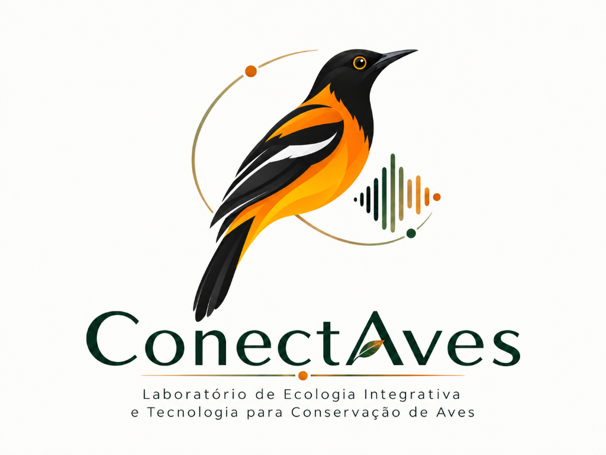

Ecologia de populações e comunidades
Estudo dos padrões ecológicos das aves e de suas relações com os ambientes.
Pesquisa independente · Recife, PE
Uma iniciativa de pesquisa conduzida por Jonathan Ribeiro, em Recife, que usa aves como modelo para investigar questões ecológicas e de conservação.

O ConectAves aproxima ecologia de populações e comunidades, ecoacústica e biologia da conservação, tendo as aves como modelo biológico.
O laboratório está em formação e é conduzido por Jonathan Ribeiro em Recife. Este espaço crescerá com a apresentação dos projetos, páginas de pesquisa e resultados.
Estas são as áreas em que o trabalho do laboratório se concentra. Os projetos e métodos específicos serão apresentados em páginas próprias.
Estudo dos padrões ecológicos das aves e de suas relações com os ambientes.
Investigação de paisagens sonoras e de informações acústicas relevantes para a pesquisa com aves.
Pesquisa orientada por perguntas sobre a conservação das aves e de seus ambientes.
O ConectAves é conduzido por Jonathan Ribeiro, em Recife. Um canal de contato direto será incluído aqui.